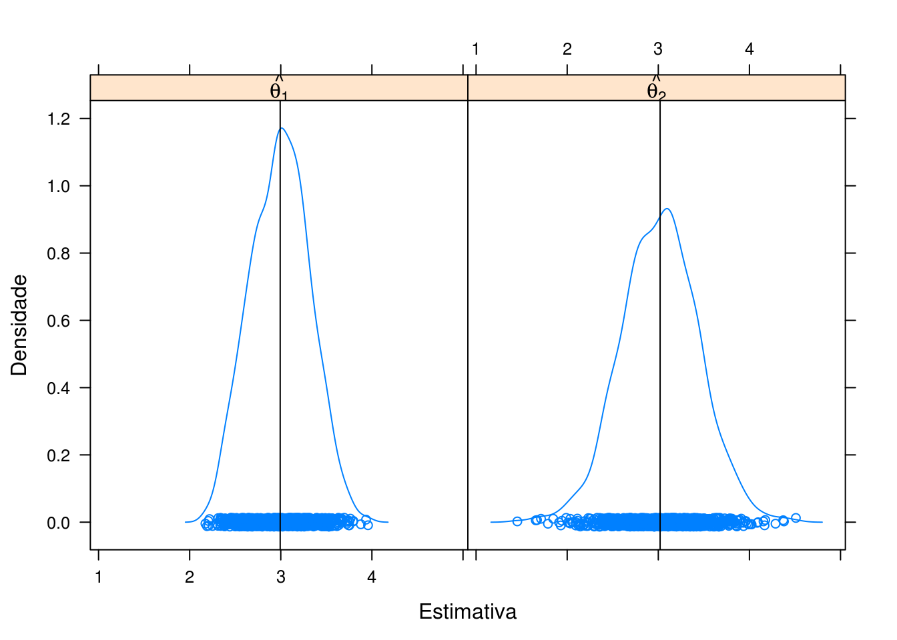
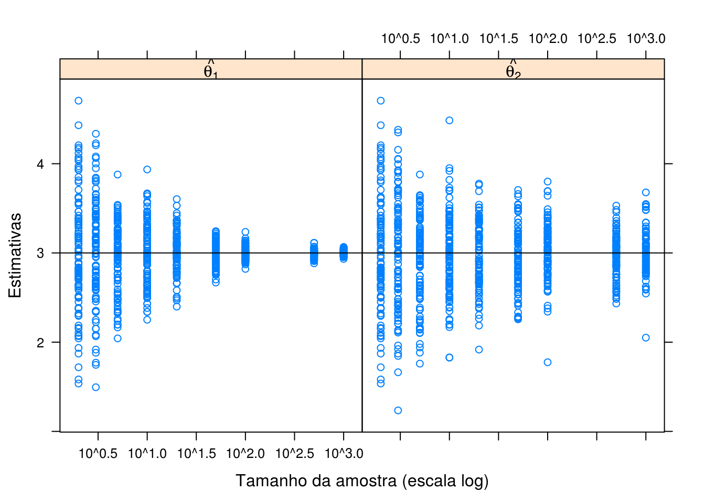
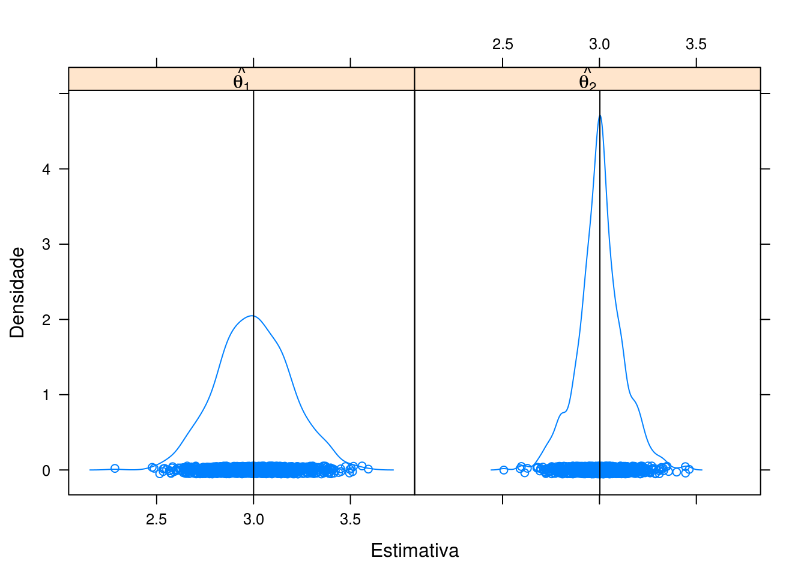
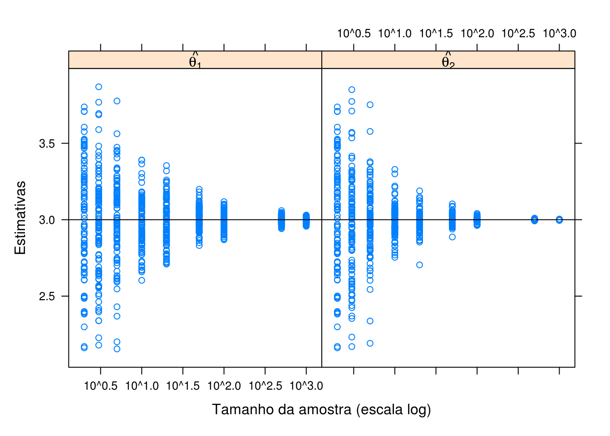
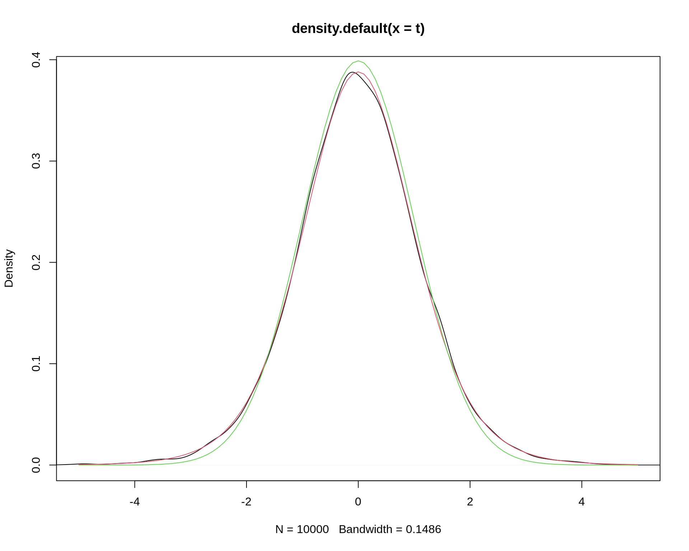
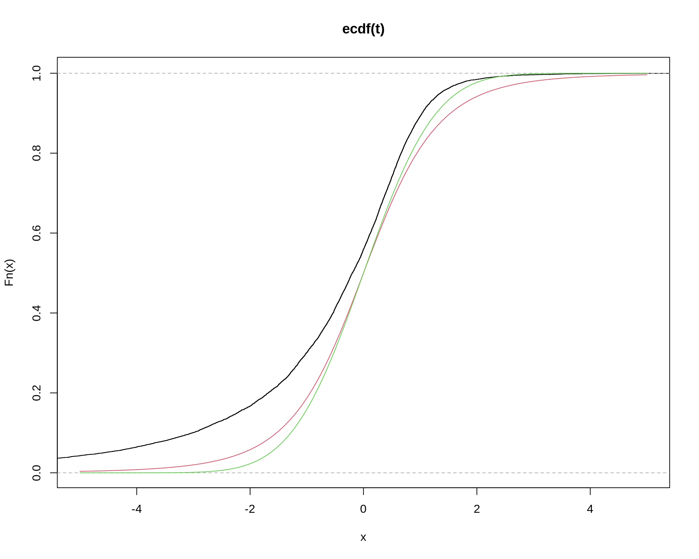

Métodos de Monte Carlo em inferência estatística
Propriedades de estimadores
Fernando P. Mayer
1 Introdução
Seja \(X\) uma variável aleatória com função densidade (ou de probabilidade) denotada por \(f(x,\theta)\), em que \(\theta\) é um parâmetro desconhecido. Chamamos de inferência estatística o problema que consiste em especificar um ou mais valores para \(\theta\), baseado em um conjunto de valores \(X\).
A inferência pode ser feita de duas formas:
- estimativa pontual
- estimativa intervalar
Redução de dados
Um experimentador usa as informações em uma amostra aleatória \(X_1, \ldots, X_n\) para se fazer inferências sobre \(\theta\).
Normalmente \(n\) é grande e fica inviável tirar conclusões baseadas em uma longa lista de números.
Por isso, um dos objetivos da inferência estatística é resumir as informações de uma amostra, da maneira mais compacta possível, mas que ao mesmo tempo seja também informativa.
Normalmente esse resumo é feito por meio de estatísticas, por exemplo, a média amostral e a variância amostral.
População e amostra
O conjunto de valores de uma característica associada a uma coleção de indivíduos ou objetos de interesse é dito ser uma população.
Uma sequência \(X_1, \ldots, X_n\) de \(n\) variáveis aleatórias independentes e identicamente distribuídas (iid) com função densidade (ou de probabilidade) \(f(x,\theta)\) é dita ser uma amostra aleatória de tamanho \(n\) da distribuição de \(X\).
Como normalmente \(n>1\), então temos que a fdp ou fp conjunta será \[ f(\boldsymbol{x, \theta}) = f(x_1, \ldots, x_n, \theta) = \prod_{i=1}^n f(x_i, \theta). \]
2 Estimadores
Espaço paramétrico
- O conjunto \(\Theta\) em que \(\theta\) pode assumir seus valores é chamado de espaço paramétrico
Estimador
- Qualquer estatística que assume valores em \(\Theta\) é um estimador para \(\theta\).
Estimador pontual
- Dessa forma, um estimador pontual para \(\theta\) é qualquer estatística que possa ser usada para estimar esse parâmetro, ou seja, \[\hat{\theta} = T(\mathbf{X})\]
Observações:
- Todo estimador é uma estatística, mas nem toda estatística é um estimador.
- O valor assumido pelo estimador pontual é chamado de estimativa pontual,\[\hat{\theta} = T(\mathbf{X}) = T(X_1, \ldots, X_n) = t\] ou seja, o estimador é uma função da amostra, e a estimativa é o valor observado de um estimador (um número) de uma amostra particular.
Estimação pontual
A ideia geral por trás da estimação pontual é muito simples:
Quando a amostragem é feita a partir de uma população descrita por uma função \(f(x,\theta)\), o conhecimento de \(\theta\) a partir da amostra, gera todo o conhecimento para a população.
Dessa forma, é natural que se procure um método para se achar um bom estimador para \(\theta\).
Existem algumas propriedades que definem o que é um bom estimador, ou o ``melhor’’ estimador entre uma série de candidatos.
Localização do problema:
Considere \(X_1, \ldots, X_n\) uma amostra aleatóra de uma variável aleatória \(X\) com fdp ou fp \(f(x,\theta)\), \(\theta \in \Theta\). Sejam: \[ \hat{\theta}_1 = T_1(X_1, ..., X_n) \quad \quad \hat{\theta}_2 = T_2(X_1, ..., X_n) \] Qual dos dois estimadores pontuais é melhor para \(\theta\)?
Como não conhecemos \(\theta\), não podemos afirmar que \(\hat{\theta}_1\) é melhor do que \(\hat{\theta}_2\) e vice-versa.
O problema da estimação pontual é então escolher um estimador \(\hat{\theta}\) que se aproxime de \(\theta\) segundo algumas propriedades.
3 Propriedades dos estimadores
De modo geral, um ``bom’’ estimador deve ser:
- Não viciado
- Consistente
- Eficiente
Vício
Erro quadrático médio (EQM)
O Erro Quadrático Médio (EQM) de um estimador \(\hat{\theta}\) de \(\theta\) é dado por \[\begin{align*} \text{EQM}[\hat{\theta}] &= \text{E}[(\hat{\theta} - \theta)^2] \\ &= \text{Var}[\hat{\theta}] + \text{B}[\hat{\theta}]^2 \end{align*}\] onde \[\text{B}[\hat{\theta}] = \text{E}[\hat\theta] - \theta\] é denominado de vício do estimador \(\hat\theta\). Portanto, dizemos que um estimador é não viciado para \(\theta\) quando \[\text{B}[\hat{\theta}] = 0 \quad \Rightarrow \quad \text{E}[\hat{\theta}] = \theta\]
Estimador não viciado
Seja \((X_1, \ldots, X_n)\), uma amostra aleatória de uma variável aleatória com fdp ou fp \(f(x,\theta)\), \(\theta \in \Theta\), dizemos que o estimador \(\hat{\theta} = T(\mathbf{X})\) é não viciado para \(\theta\) se \[\text{E}[\hat{\theta}] = \text{E}[T(\mathbf{X})] = \theta \qquad \forall \, \theta \in \Theta\]
Um estimador \(\hat\theta\) é dito assintoticamente não viciado se \[\lim_{n \to \infty} \text{E}[\hat{\theta}] = \theta\] Ou seja, para grandes amostras, \(\hat\theta\) passa a ser imparcial.
Consistência
Estimador consistente
Seja \((X_1, \ldots, X_n)\), uma amostra aleatória de uma variável aleatória com fdp ou fp \(f(x,\theta)\), \(\theta \in \Theta\), o estimador \(\hat{\theta} = T(\mathbf{X})\) é consistente para \(\theta\) se satisfaz simultaneamente \[\lim_{n \to \infty} \text{E}[\hat{\theta}] = \theta\] e \[\lim_{n \to \infty} \text{Var}[\hat{\theta}] = 0\]
Exemplo: média amostral \(\bar{x} = \frac{1}{n} \sum_{i=1}^{n} x_i\) como estimador da média populacional \(\mu\): \[ \text{E}(\bar{x}) = \text{E} \left[ \frac{1}{n} \sum_{i=1}^{n} x_i \right] = \mu \]
\[ \text{Var}(\bar{x}) = \text{Var} \left[ \frac{1}{n} \sum_{i=1}^{n} x_i \right] = \frac{\sigma^2}{n} \] Portanto \(\bar{x}\) é um estimador não viciado e consistente para \(\mu\).
Exemplo: variância amostral \(\hat{\sigma}^2 = \frac{1}{n} \sum_{i=1}^{n} (x_i - \bar{x})^2\) como estimador da variância populacional \(\sigma^2\): \[ \text{E}(\hat{\sigma}^2) = \text{E} \left[ \frac{1}{n} \sum_{i=1}^{n} (x_i - \bar{x})^2 \right] = \left( \frac{n-1}{n} \right) \sigma^2 \] Portanto \(\hat{\sigma}^2\) é um estimador viciado para \(\sigma^2\). (Embora seja um estimador assintoticamente não viciado).
Para eliminar esse vício, podemos definir então um novo estimador: \(S^2 = \frac{1}{n-1} \sum_{i=1}^{n} (x_i - \bar{x})^2\), e \[ \text{E}(S^2) = \text{E} \left[ \frac{1}{n-1} \sum_{i=1}^{n} (x_i - \bar{x})^2 \right] = \sigma^2 \] que é então um estimador não viciado para \(\sigma^2\).
Eficiência
Eficiência relativa
Sejam \(\hat{\theta}_1 = T_1(\mathbf{X})\) e \(\hat{\theta}_2 = T_2(\mathbf{X})\) dois estimadores pontuais não viciados para \(\theta\). A eficiência relativa de \(\hat{\theta}_1\) em relação a \(\hat{\theta}_2\) é \[\text{ER}[\hat{\theta}_1, \hat{\theta}_2] = \frac{\text{Var}[\hat{\theta}_1]}{\text{Var}[\hat{\theta}_2]}\]
Se:
- \(\text{ER}[\hat{\theta}_1, \hat{\theta}_2] > 1\) \(\Rightarrow\) \(\hat\theta_2\) é mais eficiente
- \(\text{ER}[\hat{\theta}_1, \hat{\theta}_2] < 1\) \(\Rightarrow\) \(\hat\theta_1\) é mais eficiente
Exemplo
Uma amostra \((X_1, \ldots, X_n)\) é retirada de uma população com \(X \sim \text{N}(\mu, \sigma^2)\), e dois estimadores são propostos para \(\mu\): \[ \hat{\mu}_1 = \bar{X} \quad \text{e} \quad \hat{\mu}_2 = \text{mediana}(X_1, \ldots, X_n) \] Qual dos dois é melhor para \(\mu\)?
Podemos notar que \[\begin{align*} \text{E}(\hat{\mu}_1) &= \text{E}(\bar{X}) = \mu \\ \text{Var}(\hat{\mu}_1) &= \text{Var}(\bar{X}) = \sigma^2/n \end{align*}\] \[\begin{align*} \text{E}(\hat{\mu}_2) &= \text{E}(\text{mediana}(X_1, \ldots, X_n)) = \mu \\ \text{Var}(\hat{\mu}_2) &= \text{Var}(\text{mediana}(X_1, \ldots, X_n)) = (\pi/2)(\sigma^2/n) \end{align*}\] Portanto, ambos são estimadores não viciados e consistentes. Mas: \[ \text{ER}[\hat{\mu}_1, \hat{\mu}_2] = \frac{\text{Var}[\hat{\mu}_1]}{\text{Var}[\hat{\mu}_2]} = \frac{\sigma^2/n}{(\pi/2)(\sigma^2/n)} = \frac{2}{\pi} = 0,63 \] Como \(\text{ER}[\hat{\mu}_1, \hat{\mu}_2] < 1\) então \(\hat{\mu}_1 = \bar{X}\) é mais eficiente.
Erro padrão
O erro padrão de um estimador dá uma ideia da precisão da estimativa.
O erro padrão (EP) de um estimador é o seu desvio-padrão (raíz quadrada da variância), ou seja, \[ \text{EP}(\hat\theta) = \sqrt{\text{Var}(\hat\theta)} \]
Exemplo: Sabemos que a distribuição de \(\bar{X}\) tem média \(\mu\) e variância \(\sigma^2/n\). Então o erro padrão de \(\bar{X}\) é \[ \text{EP}(\bar{X}) = \sqrt{\text{Var}(\bar{X})} = \sqrt{\frac{\sigma^2}{n}} = \frac{\sigma}{\sqrt{n}} \]
Exemplo 1
Considere uma amostra aleatória (\(X_1, \ldots, X_n\)) de uma variável aleatória \(X \sim \text{N}(\mu = 3, \sigma^2 = 1)\) e os estimadores pontuais para \(\mu\) \[\hat{\theta}_1 = \frac{1}{n} \sum_{i=1}^n X_i \qquad \text{e} \qquad \hat{\theta}_2 = \frac{X_{(1)}+X_{(n)}}{2}\] Qual dos dois estimadores pode ser considerado como o melhor para estimar o verdadeiro valor de \(\mu\)?
Considere os seguintes pseudo-códigos para um estudo de simulação do comportamento destes dois estimadores:
Pseudo-código 1
- Simule uma amostra de tamanho \(n = 10\) da distribuição considerada
- Para essa amostra, calcule a média (\(\hat{\theta}_1\)) e o ponto médio (\(\hat{\theta}_2\))
- Repita os passos (1) e (2) acima \(N = 1000\) vezes
- Faça um gráfico da densidade das \(N = 1000\) estimativas de \(\hat{\theta}_1\) e \(\hat{\theta}_2\) e verifique seu comportamento
## Define valores
N <- 1000
n <- 10
## Gera amostras e calcula estimativas
set.seed(1)
th1 <- replicate(N, mean(rnorm(n, mean = 3, sd = 1)))
th2 <- replicate(N, mean(range(rnorm(n, mean = 3, sd = 1))))
## Converte para data frame
L <- list(th1 = data.frame(est = th1), th2 = data.frame(est = th2))
L <- ldply(L)
str(L)
# 'data.frame': 2000 obs. of 2 variables:
# $ .id: chr "th1" "th1" "th1" "th1" ...
# $ est: num 3.13 3.25 2.87 3.12 3.13 ...
## Distribuição das estimativas
densityplot(
~ est | .id, data = L,
panel = function(x, ...){
panel.densityplot(x, ...)
panel.abline(v = mean(x))
},
xlab = "Estimativa", ylab = "Densidade",
strip = strip.custom(
factor.levels = c(expression(hat(theta[1])),
expression(hat(theta[2]))))
)
Pseudo-código 2
- Simule amostras de tamanhos (\(n\)) 2, 3, 5, 10, 20, 50, 100, 500, 1000 da distribuição considerada
- Para cada amostra de tamanho \(n\), calcule a média (\(\hat{\theta}_1\)) e o ponto médio (\(\hat{\theta}_2\))
- Repita os passos (1) e (2) acima \(N = 100\) vezes
- Faça um gráfico das \(N = 100\) estimativas de \(\hat{\theta}_1\) e \(\hat{\theta}_2\) para cada tamanho de amostra \(n\) e verifique seu comportamento
## Define valores
N <- 100
nval <- c(2, 3, 5, 10, 20, 50, 100, 500, 1000)
## Calcula média para cada tamanho de amostra
set.seed(1)
th1 <- sapply(
nval,
function(n){
replicate(N, mean(rnorm(n, mean = 3, sd = 1)))
}
)
str(th1)
th1 <- stack(as.data.frame(th1))
levels(th1$ind) <- as.character(nval)
th1$ind <- as.numeric(as.character(th1$ind))
## Calcula ponto médio para cada tamanho de amostra
set.seed(1)
th2 <- sapply(
nval,
function(n){
replicate(N, mean(range(rnorm(n, mean = 3, sd = 1))))
}
)
str(th2)
th2 <- stack(as.data.frame(th2))
levels(th2$ind) <- as.character(nval)
th2$ind <- as.numeric(as.character(th2$ind))
## Converte para data frame
L <- list(th1 = th1, th2 = th2)
L <- ldply(L)
L$.id <- factor(L$.id)
## Distribuição para cada tamanho de amostra
xyplot(
values ~ ind | factor(.id), L,
xlab = "Tamanho da amostra (escala log)", ylab = "Estimativas",
strip = strip.custom(
factor.levels =
c(expression(hat(theta[1])),
expression(hat(theta[2])))),
scales = list(x = list(log = 10))) +
layer(panel.abline(h = 3))
Exemplo 2
Considere uma amostra aleatória (\(X_1, \ldots, X_n\)) de uma variável aleatória \(Y \sim \text{U}(\text{min} = 2, \text{max} = 4)\) (distribuição uniforme no intervalo [2,4]) e os estimadores pontuais para \(\mu\) \[\hat{\theta}_1 = \frac{1}{n} \sum_{i=1}^n X_i \qquad \text{e} \qquad \hat{\theta}_2 = \frac{X_{(1)}+X_{(n)}}{2}\] Qual dos dois estimadores pode ser considerado como o melhor para estimar a média de \(Y\)?
Pseudo-código 1
N <- 1000
n <- 10
set.seed(1)
th1 <- replicate(N, mean(runif(n, min = 2, max = 4)))
th2 <- replicate(N, mean(range(runif(n, min = 2, max = 4))))
L <- list(th1 = data.frame(est = th1), th2 = data.frame(est = th2))
L <- ldply(L)
str(L)
# 'data.frame': 2000 obs. of 2 variables:
# $ .id: chr "th1" "th1" "th1" "th1" ...
# $ est: num 3.1 3.12 2.84 3.06 3.21 ...
densityplot(
~est | .id, data = L,
panel = function(x, ...){
panel.densityplot(x, ...)
panel.abline(v = mean(x))
},
xlab = "Estimativa", ylab = "Densidade",
strip = strip.custom(
factor.levels =
c(expression(hat(theta[1])),
expression(hat(theta[2])))))
Pseudo-código 2
N <- 100
nval <- c(2, 3, 5, 10, 20, 50, 100, 500, 1000)
set.seed(1)
th1 <- sapply(
nval,
function(n){
replicate(N, mean(runif(n, min = 2, max = 4)))
}
)
str(th1)
# num [1:100, 1:9] 2.64 3.48 3.1 3.61 2.69 ...
th1 <- stack(as.data.frame(th1))
levels(th1$ind) <- as.character(nval)
th1$ind <- as.numeric(as.character(th1$ind))
set.seed(1)
th2 <- sapply(
nval,
function(n){
replicate(N, mean(range(runif(n, min = 2, max = 4))))
}
)
str(th2)
# num [1:100, 1:9] 2.64 3.48 3.1 3.61 2.69 ...
th2 <- stack(as.data.frame(th2))
levels(th2$ind) <- as.character(nval)
th2$ind <- as.numeric(as.character(th2$ind))
L <- list(th1 = th1, th2 = th2)
L <- ldply(L)
L$.id <- factor(L$.id)
xyplot(
values ~ ind | .id, L,
xlab = "Tamanho da amostra (escala log)", ylab = "Estimativas",
strip = strip.custom(
factor.levels =
c(expression(hat(theta[1])),
expression(hat(theta[2])))),
scales = list(x = list(log = 10))) +
layer(panel.abline(h = 3))
4 Distribuição amostral da média
##======================================================================
## Script Teorema do Limite Central - TLC
##======================================================================
set.seed(2014)
## Grafico de convergência de 4 distribuições de acordo com o TLC
# Normal(500, 1000)
norm <- rnorm(500, mean = 500, sd = 100)
# Uniforme[200,800]
unif <- runif(500, min = 200, max = 800)
# Exponencial(1)
expo <- rexp(500, rate = 1)
# Poisson(2)
pois <- rpois(500, lambda = 2)
# n amostral
n <- c(5, 25, 100)
# m = número de amostras aleatórias de tamanho n
m <- 500
# vetor temporario para receber os valores de média
temp <- numeric(m)
## Limites para cada distribuicao
xlim.norm <- c(150, 800)
xlim.unif <- c(200, 800)
xlim.expo <- c(0, 6)
xlim.pois <- c(0, 7)
## pdf("img/dist_amostrais.pdf", width = 8, height = 8)
par(mfrow = c(4, 4))
# Distribuição Normal
hist(norm, freq = TRUE, main = "População - N = 500",
include.lowest = TRUE, right = FALSE, ylab = "Frequência",
col = "lightgray", xlab = "Normal", xlim = xlim.norm)
for(i in 1:3){
for(j in 1:m){
temp[j] <- mean(sample(norm, size = n[i], replace = TRUE))
}
hist(temp, freq = TRUE, main = paste("n = ", n[i]),
include.lowest = TRUE, right = FALSE, ylab = "Frequência",
xlab = "Médias amostrais", xlim = xlim.norm)
}
# Distribuição Uniforme
hist(unif, freq = TRUE, main = "População - N = 500",
include.lowest = TRUE, right = FALSE, xlim = xlim.unif,
col = "lightgray", xlab = "Uniforme", ylab = "Frequência")
for(i in 1:3){
for(j in 1:m){
temp[j] <- mean(sample(unif, size = n[i], replace = TRUE))
}
hist(temp, freq = TRUE, main = paste("n = ", n[i]),
include.lowest = TRUE, right = FALSE, ylab = "Frequência",
xlab = "Médias amostrais", xlim = xlim.unif)
}
# Distribuição Exponencial
hist(expo, freq = TRUE, main = "População - N = 500",
include.lowest = TRUE, right = FALSE, xlim = xlim.expo,
col = "lightgray", xlab = "Exponencial", ylab = "Frequência")
for(i in 1:3){
for(j in 1:m){
temp[j] <- mean(sample(expo, size = n[i], replace = TRUE))
}
hist(temp, freq = TRUE, main = paste("n = ", n[i]),
include.lowest = TRUE, right = FALSE, ylab = "Frequência",
xlab = "Médias amostrais", xlim = xlim.expo)
}
# Distribuição Poisson
hist(pois, freq = TRUE, main = "População - N = 500",
include.lowest = TRUE, right = FALSE, xlim = xlim.pois,
col = "lightgray", xlab = "Poisson", ylab = "Frequência")
for(i in 1:3){
for(j in 1:m){
temp[j] <- mean(sample(pois, size = n[i], replace = TRUE))
}
hist(temp, freq = TRUE, main = paste("n = ", n[i]),
include.lowest = TRUE, right = FALSE, ylab = "Frequência",
xlab = "Médias amostrais", xlim = xlim.pois)
}
par(mfrow = c(1, 1))
## dev.off()5 Teste de hipótese de Monte Carlo
- Erro Tipo I: rejeitar \(H_0\), quando \(H_0\) é verdadeira.
- Erro Tipo II: não rejeitar \(H_0\) quando \(H_0\) é falsa.
Definimos por \(\alpha\) e \(\beta\) as probabilidades de cometer os erros do tipo I e II:
- \(\alpha = P(\text{erro tipo I}) = P(\text{rejeitar } H_0 \, | \, H_0 \text{ verdadeira})\)
- \(\beta = P(\text{error tipo II}) = P(\text{não rejeitar } H_0 \, | \, H_0 \text{ falsa})\)
Cálculo da taxa empírica do erro do tipo I
## Obtém o valor da estatística t do teste de Student para a média de
## uma população. Assume que a distribuição de X seja normal.
simula0 <- function(n, mu0, sig0){
X <- rnorm(n, mean=mu0, sd=sig0)
T <- (mean(X)-mu0)/(sqrt(var(X)/n))
return(T)
}
simula0(n=10, mu0=0, sig0=1)
# [1] -0.2900813
t <- replicate(10000, simula0(n=10, mu0=0, sig0=1))
## Comparação por distribuições acumuladas.
plot(ecdf(t), xlim=c(-5, 5))
curve(pt(x, df=10-1), add=TRUE, col=2)
curve(pnorm(x), add=TRUE, col=3)
## Comparação pela densidade.
plot(density(t), xlim=c(-5, 5))
curve(dt(x, df=10-1), add=TRUE, col=2)
curve(dnorm(x), add=TRUE, col=3)
## p-valor da simulação.
sum(abs(t) >= qt(0.975, df=10-1))/length(t)
# [1] 0.0478
## Distribuição da estatística com afastamento dos pressupostos sobre a
## distribuição da população (X) que não tem distribuição normal.
simula1 <- function(n, mu0=1){
X <- rexp(n, 1)
T <- (mean(X)-mu0)/(sqrt(var(X)/n))
return(T)
}
## Tamanho da amostra da exponencial
n <- 5
t <- replicate(10000, simula1(n=n))
plot(ecdf(t), xlim=c(-5, 5))
curve(pt(x, df=n-1), add=TRUE, col=2)
curve(pnorm(x), add=TRUE, col=3)

Este conteúdo está disponível por meio da Licença Creative Commons 4.0